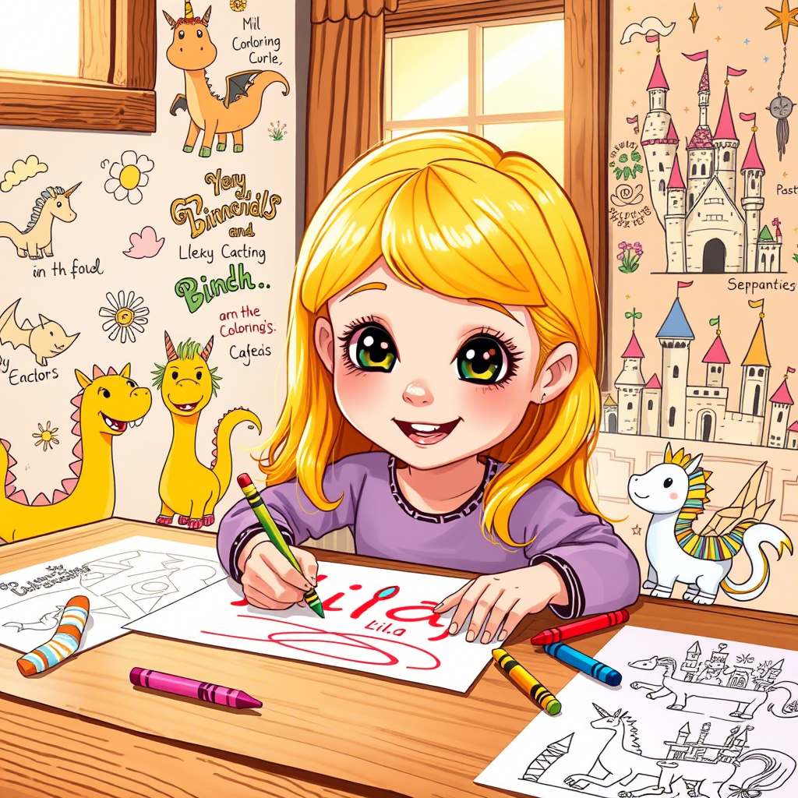
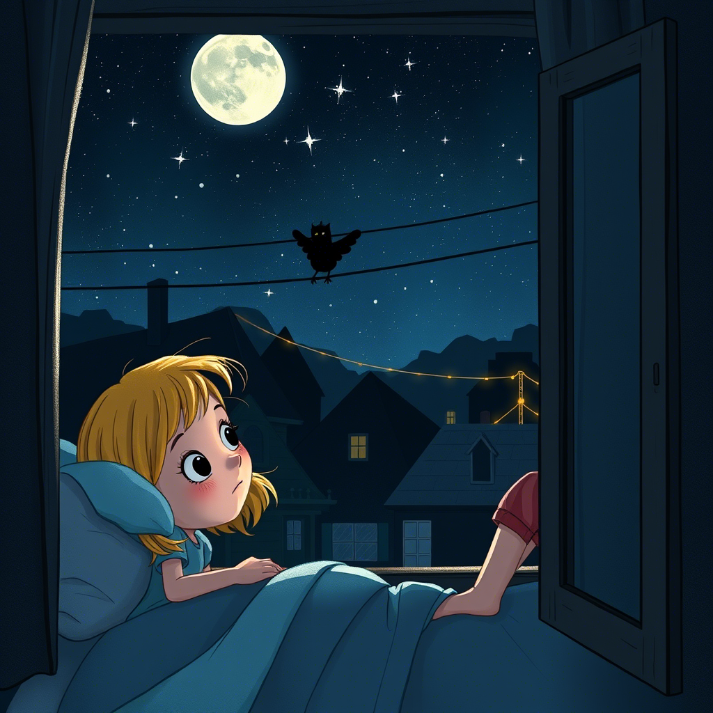
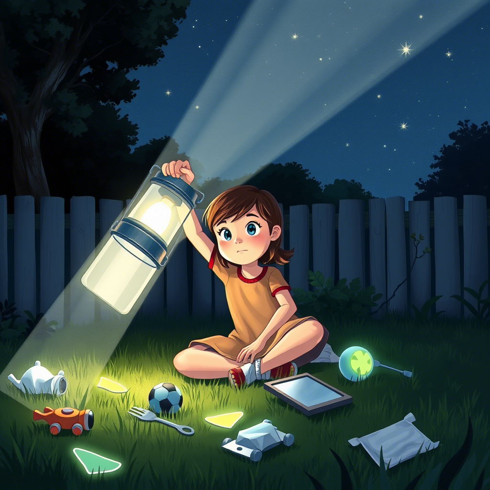
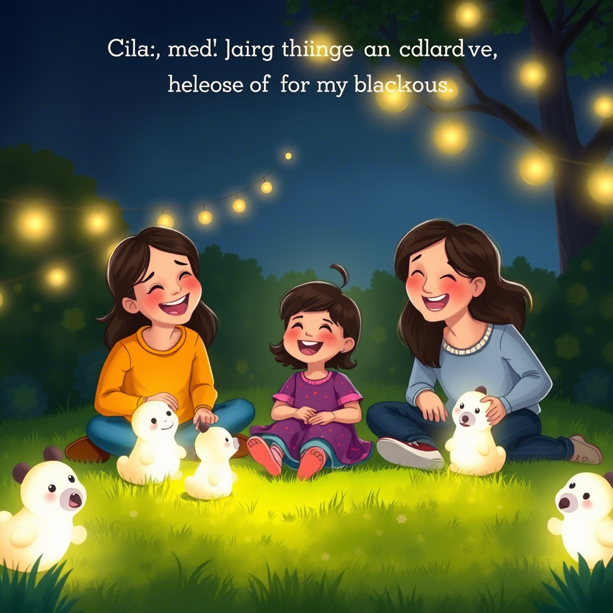
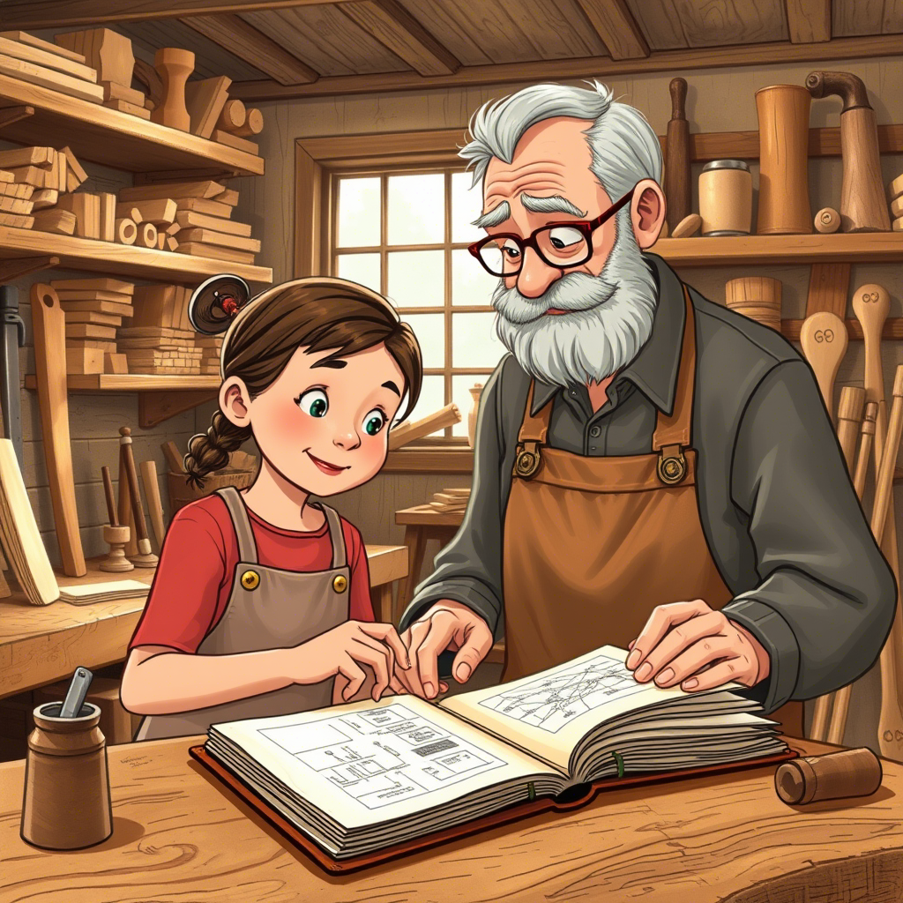

Capítulo 1: Lila, la Niña de las Mil Ideas
En el corazón de un lugar llamado "La Comunidad", donde las casas se acurrucaban como gatitos bajo el sol, vivía Lila...
Leer másEn el corazón de un lugar llamado "La Comunidad", donde las casas se acurrucaban como gatitos bajo el sol, vivía Lila. Tenía seis años, una melena color miel que siempre atrapaba rayos de sol y unos ojos que brillaban como luciérnagas en la noche. Lila no caminaba, ¡exploraba! Cada rincón de La Comunidad era un nuevo mundo por descubrir, cada charco un océano para barcos de papel, cada nube una criatura fantástica. Su casa era un hervidero de risas y cariño. Sus padres, siempre listos para un abrazo; sus abuelos, contadores de historias con voces de caramelo. Lila pasaba horas dibujando dragones con calcetines a rayas, inventando diálogos para las ardillas del jardín y construyendo castillos de cojines más grandes que ella. La felicidad de Lila era como una burbuja de jabón, brillante y llena de color… hasta que, de repente, ¡PUM! La luz se iba. Y entonces, todo cambiaba. La risa se apagaba como una vela soplada por un gigante invisible. Las sombras se alargaban como dedos huesudos, y el silencio se llenaba de pequeños ruidos que antes no notaba. El mundo de colores de Lila se convertía en un lugar gris y gruñón. "¡Otra vez no!" suspiraba Lila, con su vocecita que de pronto sonaba más pequeña. La oscuridad le hacía cosquillas en el estómago, pero no cosquillas divertidas, sino esas que te hacen sentir un poco… brrr. En su mente de niña, Lila había inventado una explicación para estas molestas ausencias de luz. No era un problema técnico, ¡no señor! Era un villano, un ser oscuro y escurridizo que, en secreto, se dedicaba a robar la luz de La Comunidad. Lo imaginaba con capa negra y bigotes retorcidos, riéndose a carcajadas mientras sumía al pueblo en la penumbra. Sin saberlo, la fantasía de Lila… no estaba tan lejos de la verdad.
Capítulo 2: El Misterioso Chupaluces
Las semanas se deslizaban entre juegos y apagones. Lila ya conocía el ritual: la luz se iba, su alegría se escondía, y la oscuridad… bueno, la oscuridad simplemente era...
Leer másLas semanas se deslizaban entre juegos y apagones. Lila ya conocía el ritual: la luz se iba, su alegría se escondía, y la oscuridad… bueno, la oscuridad simplemente era. Pero Lila era una niña de acción, ¡no de resignación! Decidió que era hora de investigar. Una noche, sentada en el alféizar de su ventana, mirando las estrellas que titilaban como pequeños ojos curiosos, Lila tuvo una idea. Si el villano robaba la luz, ¡seguro que lo hacía desde algún lugar alto! Así que levantó la vista, más allá de los tejados de La Comunidad, hacia el cielo estrellado. Y allí lo vio. No era un ser con capa y bigotes, como había imaginado. Era… algo más extraño. Una especie de sombra temblorosa, como una mancha de tinta moviéndose en el aire, flotando entre los cables de la luz. Se movía con suavidad, como si estuviera bebiendo de las bombillas invisibles que conectaban las casas. Lila parpadeó. ¿Era real? ¿O era su imaginación jugándole una broma en la oscuridad? No, ahí estaba de nuevo, moviéndose, succionando… ¡robando la luz! Corrió a contárselo a sus padres, con el corazón latiéndole como un tambor loco. "¡Mamá, papá! ¡Lo vi! ¡Vi al que roba la luz!" exclamó, señalando frenéticamente hacia la ventana oscura. Sus padres se acercaron, con una sonrisa dulce pero un poco incrédula. "¿Ah sí, Lila? ¿Y qué era?" preguntó su papá, con tono divertido. "¡Era una sombra que bebía luz! ¡Estaba en los cables, lo juro!" Lila insistió, con los ojos muy abiertos. Sus padres se miraron, intercambiando una sonrisa cómplice. "Cariño, seguro que era solo tu imaginación. A veces, las sombras nos juegan trucos en la oscuridad" dijo su mamá, acariciándole el pelo. "Pero qué imaginación tienes, ¡eres toda una aventurera!" Lila suspiró. No le creían. ¡Pero ella lo había visto! Tenía que demostrarles que no estaba loca, que el villano de la luz era real. Y tenía un plan… ¡un plan muy astuto!
Capítulo 3: Operación "Caza al Chispadrón"
Lila bautizó a su villano "El Chispadrón", un nombre que sonaba un poco ridículo pero también un poco amenazante. Y si El Chispadrón robaba la luz… ¡ella lo atraparía con luz!
Leer másLila bautizó a su villano "El Chispadrón", un nombre que sonaba un poco ridículo pero también un poco amenazante. Y si El Chispadrón robaba la luz… ¡ella lo atraparía con luz! Su plan era ingenioso y, a ojos de una niña de seis años, ¡infalible! Reunió sus herramientas: una linterna gigante (la de acampar de su abuelo, que pesaba casi más que ella), un espejo brillante, papel de aluminio reluciente y todos sus juguetes que brillaban en la oscuridad. Esperó pacientemente a que la noche cayera y, con ella, el temido apagón. Cuando las luces parpadearon y se fueron, Lila entró en acción. "¡Operación Caza al Chispadrón, en marcha!" susurró para sí misma, con un guiño decidido. Se colocó en el jardín, apuntando la linterna hacia el cielo. La luz rasgó la oscuridad, creando un haz brillante que parecía querer alcanzar las estrellas. Con el espejo, intentó reflejar la luz en diferentes direcciones, creando destellos y movimientos confusos. El papel de aluminio lo agitaba como si fueran alas brillantes, y sus juguetes fosforescentes los colocó alrededor, esperando atraer al Chispadrón con su brillo. Parecía una pequeña directora de orquesta de luces, dirigiendo un espectáculo solo para ella… y para el Chispadrón. Esperó, esperó y esperó. El frío de la noche le mordisqueaba las mejillas, y el peso de la linterna le hacía temblar los brazos. Pero Lila no se rendía. ¡Iba a atrapar a ese ladrón de luz! De repente, algo se movió en los cables. Lila contuvo la respiración. ¿Era él? ¿Había funcionado su plan? La sombra temblorosa apareció, flotando entre los cables, justo donde Lila esperaba. Parecía… curiosa. Se acercó un poco al haz de luz, como si estuviera examinando aquel despliegue luminoso. Lila sonrió, triunfante. ¡Lo había atraído! Ahora solo tenía que… ¿qué se suponía que tenía que hacer ahora? En ese momento, el espejo resbaló de sus manos con un *clank* metálico. La linterna, tambaleándose, cayó al suelo, apagándose con un *clonc* sordo. El papel de aluminio salió volando con una ráfaga de viento, y los juguetes brillantes… bueno, seguían brillando en el suelo, sin hacer mucho más. La oscuridad volvió a envolver a Lila, más densa y burlona que antes. Y el Chispadrón… simplemente se desvaneció, como si nunca hubiera estado allí.
Capítulo 4: Risas en la Oscuridad (y un poco de Frío)
Lila se sentó en el suelo, rodeada de sus juguetes brillantes y su plan fallido. Suspiró profundamente. El Chispadrón era más listo de lo que pensaba. O tal vez… su plan no era tan infalible después de todo...
Leer másLila se sentó en el suelo, rodeada de sus juguetes brillantes y su plan fallido. Suspiró profundamente. El Chispadrón era más listo de lo que pensaba. O tal vez… su plan no era tan infalible después de todo. De repente, escuchó pasos acercándose. Eran sus padres, con linternas en mano y caras preocupadas. "¡Lila! ¿Estás bien? ¿Qué pasó?" preguntó su mamá, arrodillándose a su lado. Lila les contó todo: el plan, la linterna, el espejo, el Chispadrón… y el gran *flop*. Sus padres la escucharon atentamente, sin interrumpirla, con una mezcla de ternura y… ¿sorpresa? Cuando terminó, hubo un momento de silencio. Lila esperaba reproches, o al menos más sonrisas incrédulas. Pero en lugar de eso, su papá se sentó a su lado y le rodeó los hombros con un brazo. "Sabes, Lila," dijo con voz suave, "has hecho algo muy valiente. Has intentado resolver un problema, has usado tu imaginación y has sido muy persistente." "Pero no funcionó," murmuró Lila, con un puchero. "A veces las cosas no funcionan a la primera," respondió su mamá, sonriendo. "Pero eso no significa que debamos dejar de intentarlo. Y además… ¡has creado un espectáculo de luces increíble! ¿Viste cómo brillaba todo?" Y entonces, pasó algo inesperado. Sus padres empezaron a reírse. No una risa burlona, sino una risa cálida y contagiosa, una risa que llenaba la oscuridad y hacía que todo pareciera un poco menos… oscuro. Lila se unió a la risa, al principio tímidamente, luego con más fuerza, hasta que los tres estaban riendo a carcajadas en medio del jardín oscuro, iluminados solo por el suave brillo de los juguetes fosforescentes. "¡Quizás el Chispadrón también se estaba riendo!" exclamó Lila entre risitas, imaginando al villano sombra con una sonrisa escurridiza. "Seguro que sí," dijo su papá, secándose una lágrima de risa. "Y probablemente esté pensando: '¡Vaya, qué niña más brillante! Casi me atrapa con su espectáculo de luces!'" "¡Tendremos que pensar en un plan mejor!" declaró Lila, con el espíritu renovado. La oscuridad ya no parecía tan amenazante, ahora que estaba llena de risas y del calor de sus padres. "Así se habla," dijo su mamá, poniéndose de pie y extendiéndole la mano a Lila. "Pero por ahora, ¿qué te parece si volvemos adentro? Hace un poco de frío aquí fuera, y creo que alguien se merece un buen vaso de leche caliente y un cuento antes de dormir." Lila asintió, sintiéndose mucho mejor. El plan no había funcionado, pero no había sido un fracaso total. Había visto al Chispadrón más de cerca, había intentado algo valiente, y lo más importante, había compartido una noche de risas con sus padres en medio de la oscuridad. Quizás la oscuridad no era tan mala después de todo… cuando tenías con quien compartirla. Mientras volvían a casa, cogidos de la mano, Lila miró hacia el cielo estrellado. Las estrellas seguían titilando, como pequeños farolillos en la noche infinita. Y aunque la luz en La Comunidad seguía apagada, dentro de su corazón, una pequeña chispa de esperanza y determinación seguía brillando.
Capítulo 5: El Secreto del Abuelo y una Nueva Pista
A la mañana siguiente, el sol entró por la ventana de Lila como un rayo de alegría. La Comunidad seguía a oscuras, pero el sol siempre encontraba la manera de colarse, incluso en los días más grises...
Leer másA la mañana siguiente, el sol entró por la ventana de Lila como un rayo de alegría. La Comunidad seguía a oscuras, pero el sol siempre encontraba la manera de colarse, incluso en los días más grises. Después de desayunar, Lila fue a buscar a su abuelo, que siempre estaba en su taller, rodeado de herramientas, madera y ese olor mágico a serrín. El abuelo era un inventor en secreto, un mago de los cacharros, capaz de arreglar cualquier cosa y de crear juguetes increíbles con sus manos. "Abuelo," comenzó Lila, sentándose en un taburete junto a su banco de trabajo, "¿sabes por qué se va la luz siempre en La Comunidad?" El abuelo dejó de lijar una pieza de madera y se quitó las gafas para mirarla con sus ojos sabios y arrugados como cortezas de árbol. "Hmm, es un misterio, ¿verdad?" dijo, pensativo. "Dicen que son problemas con la central eléctrica, pero… yo no estoy tan seguro." Lila se enderezó en el taburete, interesada. "¿Tú qué crees que es, abuelo?" El abuelo sonrió misteriosamente y se acercó a un viejo arcón de madera que guardaba en un rincón del taller. Lo abrió con cuidado, como si contuviera un tesoro secreto. Dentro, había un montón de objetos extraños: engranajes oxidados, cables de colores, bombillas antiguas, y un cuaderno de tapas de cuero lleno de dibujos y notas escritas a mano. "Hace mucho, mucho tiempo," comenzó el abuelo, con voz suave como el susurro del viento, "cuando yo era joven, como tú, también vivíamos en un pueblo donde la luz se iba siempre. Decían que era por el mal tiempo, o por las tormentas… pero yo sospechaba que había algo más." Sacó el cuaderno del arcón y lo abrió por una página llena de dibujos intrincados. Eran diagramas de extraños aparatos, esquemas de circuitos y un dibujo grande y un poco… ¿aterrador?… de una criatura oscura con forma de sombra, con tentáculos finos y ojos brillantes. "Investigué mucho," continuó el abuelo, señalando el dibujo de la criatura. "Leí libros antiguos, hablé con gente mayor… y descubrí una leyenda. Una leyenda sobre seres que se alimentan de energía, de… luz. Les llamaban… Chupaluces." Lila abrió los ojos como platos. "¿Chupaluces?" repitió, con un escalofrío de emoción recorriéndole la espalda. "¡Como el Chispadrón!" El abuelo asintió lentamente. "Quizás tu 'Chispadrón' no sea solo un invento de tu imaginación, Lila. Quizás… sea algo más real de lo que pensamos." Señaló otro dibujo en el cuaderno, un aparato extraño con forma de jaula, rodeado de cables y bombillas. "En este cuaderno," dijo, "hay planos para… ahuyentarlos. Para proteger la luz. Pero nunca llegué a construirlo. Pensé que solo eran leyendas… hasta ahora." Lila miró el cuaderno con fascinación. El secreto del abuelo, la leyenda de los Chupaluces, los planos para un aparato misterioso… todo encajaba. El Chispadrón era real, ¡y su abuelo tenía la clave para detenerlo! "Abuelo," dijo Lila, con los ojos brillantes de determinación, "¡tenemos que construir ese aparato! ¡Tenemos que atrapar al Chispadrón y devolver la luz a La Comunidad!" El abuelo sonrió, con una chispa traviesa en los ojos. "Bueno, Lila," dijo, "parece que tenemos mucho trabajo por delante… ¿Qué te parece si empezamos por estudiar estos planos?" Y así, Lila y su abuelo se inclinaron sobre el viejo cuaderno, con la luz del sol entrando por la ventana del taller, listos para comenzar una nueva aventura, una aventura mucho más real y misteriosa de lo que Lila jamás hubiera imaginado…
Continuará...